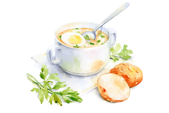

Foodspire!
Select a meal category. The visualizaton shows the relationships between ingredients. You can hover over an ingredient to look at its specific relationships.
You can use this visualization to help you choose a recipe! The recipes on the left are associated with your ingredient and will give you more information about its nutritional content. The pie chart shows you the percentage fat, protein, and carbs that make up the calories. Try clicking on the recipe name, and it will take you to the actual recipe. You can filter the recipes based on high rating, high protein, low fat, low sodium, and low carbs.
Our recipe data is based on a sample taken from the culinary website Epicurious.